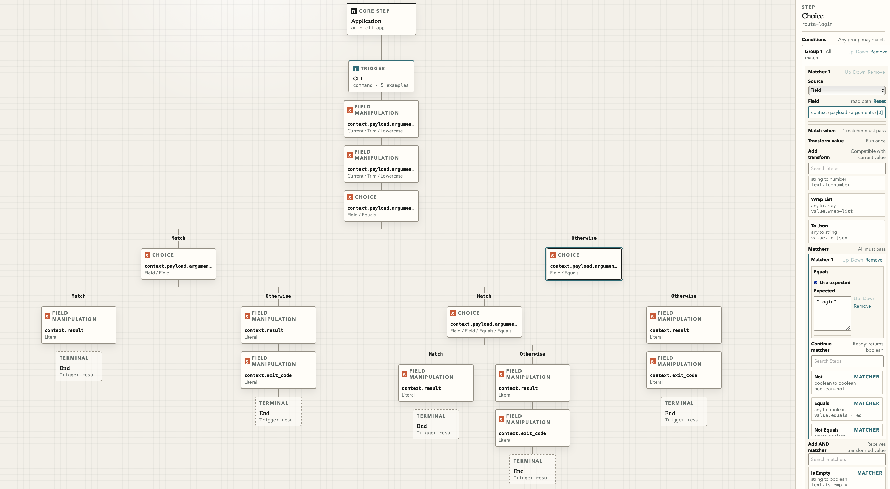

Code
Application behavior is implemented in one place and explained somewhere else.
Executable operating model
Railix brings flows, steps, examples, deployment, operations, secrets, and production visibility into one governed model, then compiles it into a secure standalone application.

The software trap
Application behavior is implemented in one place and explained somewhere else.
CI/CD, deployment rules, environments, and infrastructure become a second product.
Runbooks, alerts, dashboards, support knowledge, and audit trails drift from reality.
Secrets, access, and production visibility are too often bolted on after the fact.
How Railix works
Create software products from visual Flows and Steps.
Local examples become the build gate for the model.
Passing models compile into immutable standalone applications.
The same model guides deployment, support, audit, and future distributed execution.
For product builders
Railix Creator makes the application model visible and executable, so teams do not maintain separate diagrams, YAML estates, test assumptions, and operational folklore.
Each stakeholder can inspect the same underlying system: what it does, how it is verified, where it runs, who can see production, and how it should be operated.
No platform trap
Railix is designed so teams can use the platform without binding their runtime to it. When a model passes, the compiled application can run on infrastructure you control, from cloud environments to a Raspberry Pi.
Security boundary
Production capabilities are explicit and governed by role.
Teams can inspect production state only when that visibility is enabled.
Secrets are access-controlled instead of embedded inside applications.
Different by design
For investors
The platform becomes the compiler, governance layer, and shared model for software creation and operation, not a permanent tax on every execution path.
Start a conversation